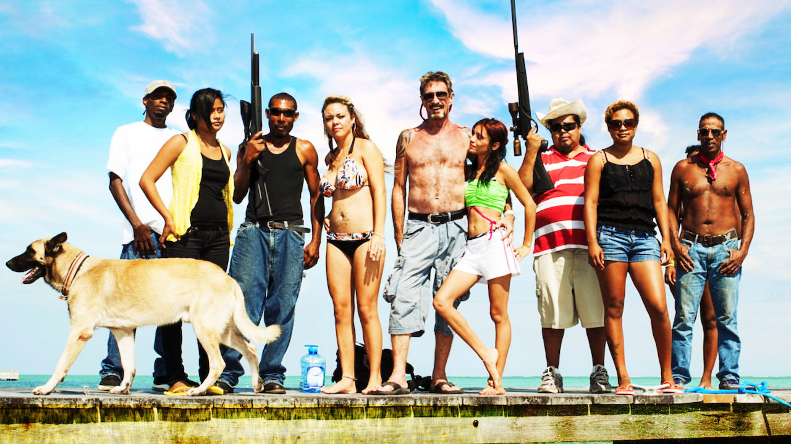

John David McAfee

General Knowledge
A British-American computer programmer and businessman. Most commonly known for being the founder of McAFee Associates, the first commercial antivirus software, in 1987 until his resignation in 1994. Since leaving McAfee Associates, he has founded companies such as Tribal Voice, QuorumEx and Future Tense Central, among other. He's also been involved in leadership positions in companies like MGT, Luxcore, Capital Investments, and many more.
However, what many don't know is the kind of life John David McAFee has lead to this point in his life.
Early Years
Born in England on September 18th, 1945, not too long after his family relocates to Roanoke, Virginia. He obtained a degree in mathematics at Roanoke College, then started working for a string of tech companies and government agencies such as NASA, Xerox and Booz Allen Hamilton to name a few.
However, during this time he's constantly losing jobs because of drugs and booze. He was selling coke and snorting it while working at Omix and lost his job at Pacific Railroad after showing up to work after doing a whole bag of DMT. When McAfee started working at Lockheed Martin, he speaks of his surprise at being hired and having security clearance. In this interview he says,
"I had a very checkered past prior to joining Lockheed Martin. I assumed that there would be no chance in hell I would ever get security clearance... They asked me very re--, y'know?Revealing questions. 'Had I ever had sex with sheep or, or, or dogs?'... or 'Had I ever taken drugs?' The answer...? Yes. 'Uhh, what kind?' Almost every kind. 'Uhhm, how much?' A lot. 'Have you ever sold drugs?' Yes. So I assumed I would never get the clearance but I did and it came in very quickly. "
The Craziest Man in Tech
As I mentioned before, McAfee is most well known for creating the McAfee software, but that's the least interesting thing about him. Here's a list of things that have happened more recently in his life.
- In 2012 his Central American jungle compound was raided by police's gang suppression unit because they thought he was cooking up meth.
- Six months later he became an international fugitive after his neighbor was found dead and he was named as the lead suspect following a media storm.
- He was arrested by Interpol in Guatemala for illegally entering the country.
- With some quick thinking he managed to escape being deported back by faking a heart attack, giving his lawyer enough time to file an appeal so he can return to the United States.
- A couple years later, McAfee ran for president
This only scratches the surface of the absolute insanity that has been John McAfee's life.
McAfee and Social Media
Something that many don't know about McAfee is that he is currently on the run from police. What you wouldn't expect from someone the run is an active social media presence on a site as large as Twitter.
He has a decently large following for his wild tweets and even wilder images. His tweets range from paranoid government rants to loving images of him and his wife in a dangerous situation on the run. There's even a tweet with an image he took of himself in prison with a phone he smuggled in.